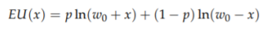
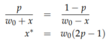
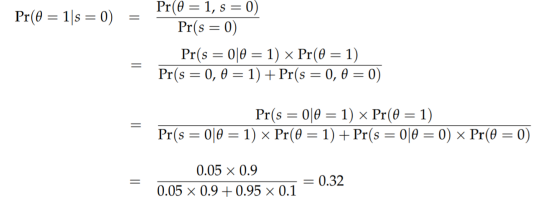

In expected value theory, the correct choice is the same for all people.
In expected utility theory, what is right for one person is not necessarily right for another person.
Consider a decision of the following form:
Option A: p% chance of $X
Option B: q% chance of $Y
Once you specify what p, q, X, Y are, then EV theory will give VERY SPECIFIC ADVICE. It will say one of the following things:
1. You should choose A
2. You should choose B
3. You should be indifferent between A and B
In contrast, EU theory says
1. You might choose A
2. You might choose B
3. You might be indifferent between A and B
It all DEPENDS on the utilities you assign to X and Y.
Let us look at this through an example to understand better
Option A: 90% chance of $100
Option B: 20% chance of $500
EV theory says that you SHOULD prefer B.
EV(A)=$90. EV(B)=$100.
EU theory says that before you can decide which one you prefer, you need to determine the UTILITY of $100 vs. $500.
Person 1 might say: $500 is better than $100, but not five times better. It's really only three times better.
So I'll rate $100 as 10 and $500 as 30.
(This person demonstrates the typical diminishing marginal utility for money.)
Therefore, EU(A)=9 and EU(B)=6.
EU theory would say that Person 1 should choose A.
In contrast to EV theory (which says EVERYONE SHOULD CHOOSE THE SAME THING), EU theory says different people might choose different things.
Person 2 might say: I really want to buy a bat that costs $500. Winning $100 would be nice but wouldn't let me achieve that goal. But if I won $500, I could buy the bat. This person might think that $500 is MORE than five times as good as $100.
This person might assign a utility of 10 to $100 and a utility of 70 to $500.
For this person,
EU(A)=0.9*10 = 9
EU(B)=0.2*70 = 14.
According to EU theory, Person 2 should choose B.
You have an opportunity to place a bet on the outcome of an upcoming race involving a certain female horse named Bayes:
If you bet x dollars and Bayes wins, you will have w0 + x, while if she loses you will have w0 - x, where w0 is your initial wealth.
1. Suppose that you believe the horse will win with probability p and that your utility for wealth w is ln (w). Find your optimal bet as a function of p and w0.
2. You know little about horse racing, only that racehorses are either winners or average, that winners win 90% of their races, and that average horses win only 10% of their races. After all the buzz you’ve been hearing, you are 90% sure that Bayes is a winner. What fraction of your wealth do you plan to bet?
3. As you approach the betting window at the track, you happen to run into your uncle. He knows rather a lot about horse racing: he correctly identifies a horse’s true quality 95% of the time. You relay your excitement about Bayes. “Don’t believe the hype,” he states. “That Bayes mare is only an average horse.” What do you bet now (assume that the rules of
the track permits you to receive money only if the horse wins)?
Let us first solve (1)
The expected utility from betting x is:

Your objective is to choose x to maximize your expected utility. The
first order condition (derivative) w.r.t x is

Solving (2)
Your probability that Bayes will win can be determined as follows:
p = 0.9 * 0.9 + 0.1 * 0.1 = 0.82
Therefore by using the formula from part 1 -
x* = w0 (2 * 0.82 - 1) = 0.64 * w0
Solving (3)
Let q denote the true type of Bayes.
q = 1 (Bayes is a winner)
q = 0 (Bayes is an average)
Let s denote the signal from your uncle.
s = 1 (uncle asserts Bayes is a winner)
s = 0 (uncle asserts Bayes is average)
The uncle’s signal is accurate 95% of the time, i.e.,

Using the formula from part 1 again, we obtain x* = 0.357w0 < w0. You would like to bet against Bayes, but this is not allowed, so the optimal choice is to bet nothing.
A utility curve is a mathematical representation of an individual's preferences and the value they assign to different outcomes. It helps compare and rank options. Risk-neutral behavior, associated with a linear utility curve, means making decisions solely based on expected outcomes, without considering the associated risk or uncertainty.